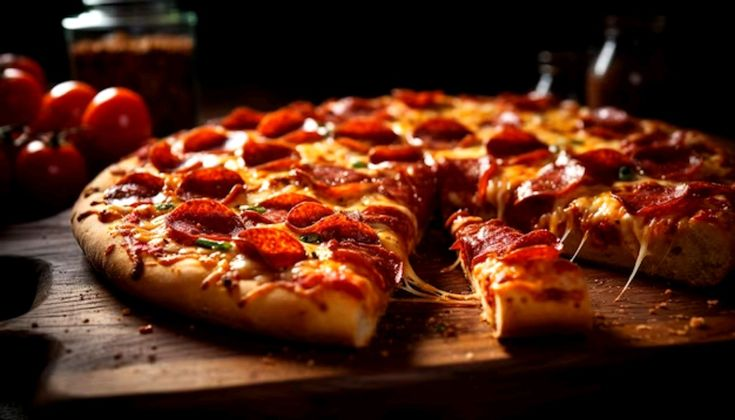

Italian Pizza:
Italian Pizza is a famous Italian dish made with a crispy crust, tomato sauce, mozzarella cheese, and fresh toppings. It is easy to make and loved by people all over the world.

Ingredients |
Steps |
|
|
Pro Tips:
- Always use fresh mozzarella cheese for the best flavor.
- Let the pizza dough rise properly for a soft and airy crust.
- Do not overload the pizza with toppings to keep the crust crispy.
- Preheat the oven before baking for even cooking.
- Garnish with fresh basil leaves after baking for an authentic Italian taste.